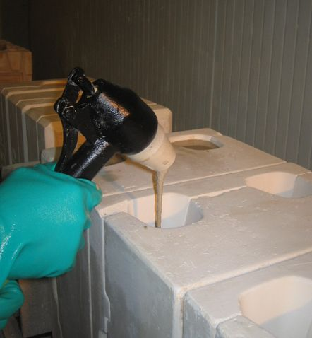
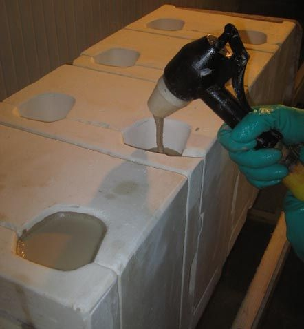
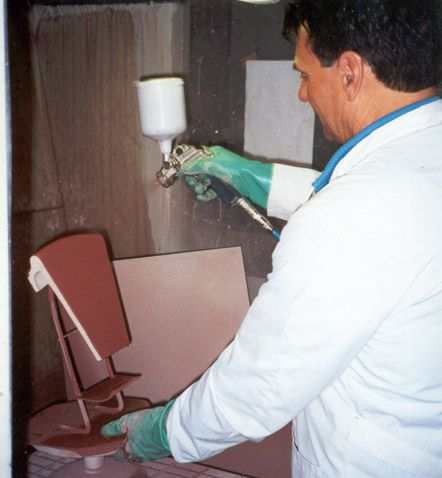
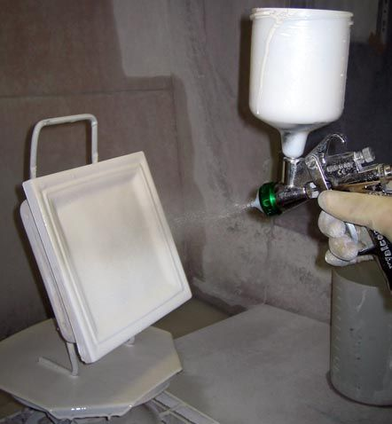
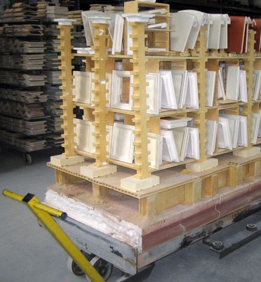
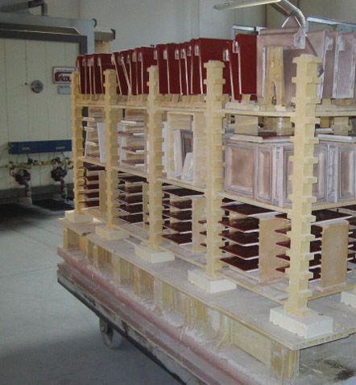
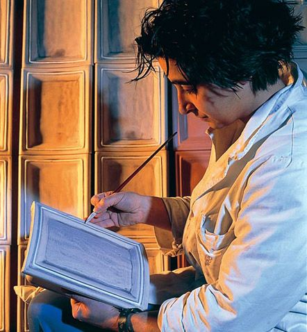
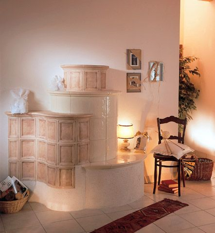
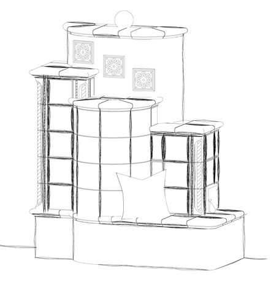
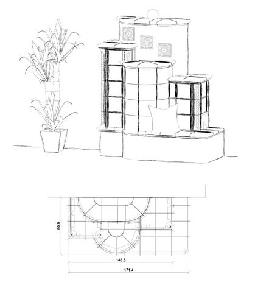

Il laboratorio
Dalla ricerca delle materie prime alla preparazione delle argille, dagli smalti ai decori: ogni maiolica passa da queste mani prima di diventare una stufa.


Il colaggio
L'argilla liquida, che nel mestiere si chiama barbottina, viene colata negli stampi in gesso ricavati dalle prime forme, e ci riposa non meno di 12 ore.
Aperto lo stampo, il pezzo ha già la sua forma: si pulisce dalle impurità, si rifinisce e si fa essiccare, così l'argilla perde l'acqua.


La smaltatura
Controllato nelle misure e negli squadri e levigato, il pezzo è pronto per lo smalto. Nei nostri laboratori usiamo solo smalti atossici.
La stesura, l'omogeneità del colore e gli effetti dipendono dalle mani esperte di chi smalta.


La cottura
L'ultima fase avviene nei forni computerizzati: lo smalto si fonde con la superficie del pezzo e i decori si fissano sui loro colori.
«La maiolica, dopo essere stata a contatto con il fuoco, diventa l'elemento essenziale della stufa.»


La decorazione
Quando il cliente lo chiede, dopo lo smalto il pezzo viene decorato a mano libera.
Dalla scelta delle argille e degli smalti fino alle tonalità, alle sfumature e ai decori.


Il progetto e la posa
La stufa in maiolica tirolese si progetta su misura per la stanza dove andrà: dallo schizzo a mano libera al progetto fatto al computer.
Poi la consulenza, la progettazione e l'installazione a casa vostra.
Produzione ed esposizione stufe
Loc. Baltera 10, 38066 Riva del Garda (TN)
Tel. 0464 552548
Mattina 8.00 · 12.00
Pomeriggio 14.00 · 18.00/19.00
Punto vendita
Viale Dante 61, 38066 Riva del Garda (TN)
Tel. 0464 557204
Email info@rigatti.com
Per il rivenditore più vicino a voi chiamate la sede di Loc. Baltera.